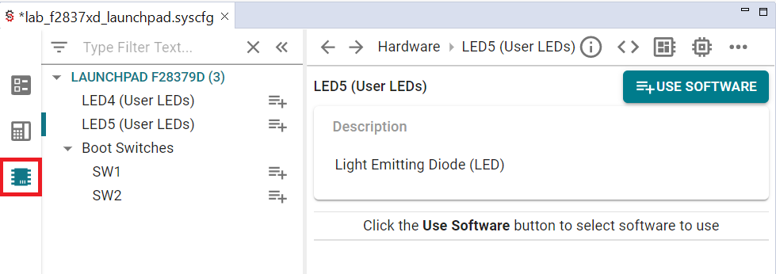
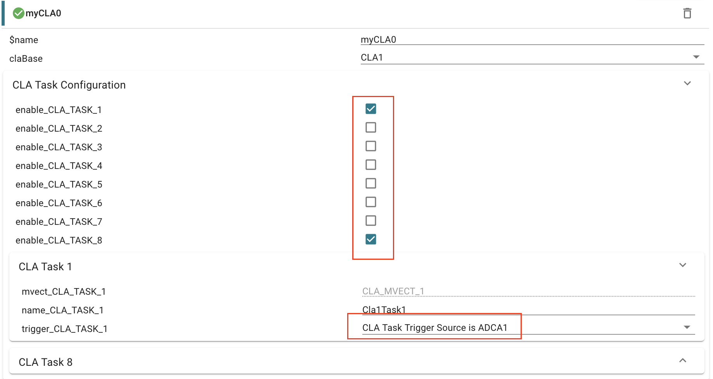

Control Law Accelerator (CLA) Lab#
The Control Law Accelerator (CLA) is an independent 32-bit floating-point math hardware accelerator which executes realtime control algorithms in parallel with the main C28x CPU. In this lab, the user will learn how to configure CLA to read the ADC sample data and then apply FIR filter to ADC sample. At the end it will send raw ADC sample data and filter outout to C28x code for further processing using Cla1ToCpuMsgRAM message RAM.
Note:
This lab cannot be performed on the following device/s since there is no CLA:
F28002x
F280013x
F280015x
Solutions#
All solutions are available in the directory: <c2000ware_install_path>/training/device/<device_name>.
Introduction#
In this lab, we will use the Control Law Accelerator (CLA) to implement a FIR lowpass filter. We will apply a PWM waveform to the input of our lowpass filter, which will result in a sinusoidal waveform at the output. The PWM waveform will be generated using one of the ePWM modules and it will be sampled via the ADC at a given sample rate. Both the filtered and unfiltered waveforms will be viewed in a real-time Code Composer Studio (CCS) debug session via internal buffers.
Lab Setup#
Hardware Setup#
You will need the following hardware for this lab:
A C2000 controlCARD or LaunchPad with the supplied USB cable.
Jumper cables.
Oscilloscope (optional).
Use the supplied USB cable to connect your C2000 board’s USB port to the standard USB Type-A connector in your computer. You should see some LEDs light up on your board. In addition to powering the board, a JTAG communication link is also established between the device and Code Composer Studio.
Later in the lab we will be routing the output pin of the PWM waveform to the input pin of the ADC, so make sure that you have enough jumper cables to facilitate this.
Software Setup#
The following software will need to be installed on your computer:
Import Empty Project#
Our first task is to import an empty project to our Code Composer Studio (CCS) workspace. The basic instructions are as follows:
Open CCS and go to Project→Import CCS Projects. A new window should appear. Ensure that the Select search-directory option is activated.
Click the Browse button and select the
[C20000ware_Install_dir]/training/device/[device]/empty_cla_labdirectory. Note that the default Windows [C20000ware_Install_dir] isC:/ti/c2000/C2000Ware_4_xx_xx_xx.Under Discovered Projects, you should now see the
lab_[board]_[device]project. Select the appropriate project for either the control card or the launchpad.
Click Finish to import and copy the
lab_cla_[board]_[device]project into your workspace.After the project has been imported, the project explorer window should look like below:
lab_main.c: C28x core C-source file with empty main() function
lab_cla_tasks.cla: CLA core source file
lab_shared.h: Common symbols defined here and they are used by both cores.
Configure the GPIO#
We will configure the necessary GPIO pins as shown below. Our PWM waveform will be output from ePWM1A. We will also configure one of the board LEDs as an indicator.
Steps to add GPIO configuration:#
In the project, open the
.syscfgfile by double-clicking it.In the SysConfig GUI, select the “Hardware” tab, as shown below.

If you have a Launchpad, click ‘+’ to add LED5. If you have a controlCard, click ‘+’ to add D2.
Select the LED option like below.

Configure ePWM1 and ePWM2#
The code below configures ePWM1A to output a 1kHz PWM waveform with a 50% duty cycle. This PWM waveform will be used as the input to our FIR lowpass filter. Notice that ePWM1A is setup to output a symmetrical PWM waveform, that is, the time base counter is setup in up/down mode. Given that we are in up/down mode and we want our PWM waveform to have a frequency of 1kHz, we have
\(\text{Time Base Period}=\frac{f_{tbclk}}{2f_{pwm}}=\frac{100* 10^6}{2* 1000}=50000.\)
Notice that the macro PWM_HALF_PERIOD is set accordingly to be 50000.
On the frequency of the ePWM clock
If you have a F2837xD or F2838x based device, the ePWM clock frequency is half
of DEVICE_SYSCLK_FREQ by default, otherwise, DEVICE_SYSCLK_FREQ and the
ePWM clock frequency are equal. The code provided in this lab results in the
ePWM clock being 100MHz.
Next, we note the configuration of the duty cycle. Since we are in up/down mode and we want our PWM waveform to have a 50% duty cycle, we have
\(\text{Counter Compare Value}=(1-\frac{duty}{100}) *tbprd=(1-\frac{50}{100})*50000=25000.\)
Notice that the macro PWM_DUTY is set accordingly to be 25000. The action
qualifier sub-module is then set to force the output to be high on a count up
event and low on a count down event. This results in the desired PWM waveform.
Add EPWM by clicking ‘+’ in SysConfig screen to add EPWM1.

In this lab, the ADC will be used to sample the generated PWM waveform from ePWM1A at a rate of 8kHz. The below code configures ePWM2 to trigger a SOC on the ADC at a rate of 8kHz. Unlike ePWM1A, notice that ePWM2 is setup to operate in up count mode, hence, we have
\(\text{Time Base Period}=\frac{f_{tbclk}}{f_{pwm}}-1=\frac{100* 10^6}{8000}-1=12499.\)
Accordingly, the macro ADC_SAMPLE_PERIOD is set to be 12499.
Now press ‘Add’ button to add EPWM2.
This concludes the configuration of the ePWM modules.
A more detailed explanation of the ePWM configuration
The configuration of both ePWM1A and ePWM2 above is identical to that of the lab in ePWM Lab, so you should see that lab for a more detailed explanation.
Configure the ADC#
In the previous section, we explained that ePWM2 would be triggering a SOC event on the ADC. In this section, we will provide the code to configure the ADC. More details about the configuration of the ADC can be found in Analog-to-Digital Converter (ADC). However, notice that we have setup a SOC to be triggered by ePWM2 and that we have setup the ADC to interrupt at the end of a conversion. This interrupt will be used to trigger a CLA task that will implement the FIR lowpass filtering routine. The ADC is also setup in continuous mode so that the ADC register always contains the most recent sample.
Add ADC by clicking ‘+’ in SysConfig screen to add ADC1.

For Devices F280039C:
Set analog reference voltage using asysctl parameter.
If the ADC module has already been added, select ASYSCTL in the ANALOG group and change the analog reference voltage to be an internal voltage of 2.5V. Otherwise, add ASYSCTL by clicking ‘+’ in ANALOG group and then add internal reference of 2.5V.
Configure the CLA#
Now that we have reviewed the linker script additions needed by the CLA and the CLA C compiler, we can go ahead and configure CLA.
Add CLA by clicking ‘+’ in SysConfig System group.

Configure the MEMCFG#
Now we can configure program and data memory of CLA1 using sysconfig MEMCFG module. Please use the table below to select LS memory for CLA program and CLA data for your device.
Device |
CLA Program Memory |
CPU and CLA Shared Data Memory |
|---|---|---|
F28379xD |
LS1 |
LS5 |
F2838x |
LS1 |
LS5 |
F28004x |
LS0 |
LS3 |
F28003x |
LS0 |
LS1 |
Add MEMCFG by clicking ‘+’ in SysConfig System group

Define the CLA tasks#
In this section, we will define the necessary global variables and includes.
A FIR lowpass filter of order 31 is used in this lab, hence,
the number of coefficients or length of the filter is 32. Notice that the
coeffs array contains the FIR filter coefficients, and the macro FIR_LEN
contains the FIR filter length. The coeffs array is one of the initialized
global variables stored in the .const_bss section. Additionally, observe that
we have defined another global variable delay, which is used as a delay line
for our FIR filter.
#include "driverlib.h"
#include "board.h"
#include "lab_shared.h"
const float coeffs[FIR_LEN] = {
-0.0006103139426196,-0.005592184655005,-0.01292485322836 ,-0.01926532895538,
-0.01762908502044 ,-0.004303218458627, 0.01563724674838 , 0.02815885544785,
0.01902562195175 ,-0.01290472511163 ,-0.04827630093442 ,-0.0545188692635,
-0.006464860729499 , 0.09270744275212 , 0.2064249836238 , 0.2822241125204,
0.2822241125204 , 0.2064249836238 , 0.09270744275212 ,-0.006464860729499,
-0.0545188692635 ,-0.04827630093442 ,-0.01290472511163 , 0.01902562195175,
0.02815885544785 , 0.01563724674838 ,-0.004303218458627,-0.01762908502044,
-0.01926532895538 ,-0.01292485322836 ,-0.005592184655005,-0.0006103139426196
};
float delay[FIR_LEN];
Now we will provide the code for the FIR lowpass filtering task Cla1Task1().
Observe that a sample is read from the ADC result register. Using the macros,
a bias value is subtracted from the ADC sample, and
the result is scaled and stored in filter_in. This step is needed to convert
the PWM waveform into a square wave expressed in volts. Unlike the PWM
waveform, a square wave does not have a zero frequency component, which in
turn, allows us to observe a sinusoidal waveform at the output of our lowpass
filter. Subsequent code implements the FIR lowpass filter. Finally, observe
that the filter_out global variable contains the filtered sample. The
filter_out and filter_in global variables are stored in the
Cla1ToCpuMsgRAM section, which allows the CPU to access the FIR lowpass
filter input and output samples in the CLA ISR.
// FIR LP filter task.
__attribute__((interrupt)) void Cla1Task1(void)
{
int16_t i;
uint16_t tmpData;
filter_out = 0.0;
// Uncomment this to debug the CLA while connected to the debugger
//__mdebugstop();
// Read in new sample and subtract off the bias.
tmpData = ADC_readResult(myADC0_RESULT_BASE, myADC0_SOC0);
filter_in = ((float)(tmpData) - (float)(1 << (ADC_BITS - 1)))*ADC_VSTEP;
// Shift the delay line to the right by 1.
#pragma UNROLL(FIR_LEN - 1)
for (i = FIR_LEN - 1; i > 0; i--) {
delay[i] = delay[i-1];
filter_out += coeffs[i]*delay[i];
}
// Add the new ADC sample to the delay line.
delay[0] = filter_in;
filter_out += coeffs[0]*delay[0];
}
Finally, we provide the code for the one time initialization routine
Cla1Task8(). This routine zeros out the delay line for the FIR filter.
__attribute__((interrupt)) void Cla1Task8(void)
{
int16_t i;
for (i = 0; i < ((int16_t)FIR_LEN); i++) {
delay[i] = 0.0;
}
}
This concludes the coding of the tasks in lab_cla_tasks.cla.
Define global macros and variables in main#
First, we will define some necessary macros and global variables. A description
of these macros and global variables will be addressed in the following
sections. Unless told otherwise, assume that all code goes in
lab_main.c.
#include "driverlib.h"
#include "device.h"
#include "board.h"
#define BUF_BITS 7 // Buffer bits <= 16.
#define BUF_LEN (1 << BUF_BITS) // Buffer length.
#define BUF_MASK ((uint16_t)(BUF_LEN - 1)) // Buffer mask.
float ClaBuf[BUF_LEN]; // Buffer to store filtered samples.
float AdcBuf[BUF_LEN]; // Buffer for un-filtered samples.
uint16_t ClaBufIdx = 0; // Buffer index for ClaBuf.
uint16_t AdcBufIdx = 0; // Buffer index for AdcBufIdx.
uint16_t LedCtr = 0;
#pragma DATA_SECTION(filter_out,"Cla1ToCpuMsgRAM");
float filter_out;
#pragma DATA_SECTION(filter_in,"Cla1ToCpuMsgRAM");
float filter_in;
Define main()#
Next, we will populate main() as shown below.
That being said, we still need to know the system clock frequency in order to
configure the ePWM modules necessary for this lab. The system clock frequency
value that is configured via Device_init() is defined as DEVICE_SYSCLK_FREQ
in <projectroot>/device/device.h. Observe that the main function only handles
initialization routines. Most of the activity in this lab will lie in the CLA
tasks and interrupt service routine (ISR).
void main(void)
{
// Configure system clock and PLL, enable peripherals, and configure
// flash if used.
Device_init();
// Initialize the PIE module and vector table.
Interrupt_initModule();
Interrupt_initVectorTable();
Board_init();
// Enable global interrupts.
EINT;
// Enable real-time debug.
ERTM;
for(;;) {
NOP; // Do nothing.
}
}
Define the CLA ISR#
Lastly, we will define the CLA ISR routine. Given the small order of our
filter, it is reasonable to assume that the runtime of Cla1Task1() will be
lower than the sampling period. Thus, this ISR will be called at a rate of
approximately 8kHz, i.e., the sampling rate of the ADC. Note that the values of
filter_in and filter_out are copied into the circular buffers AdcBuf and
ClaBuf, respectively. Finally, the global variable LedCtr is used to divide
the ISR call rate by 8000 in order to toggle an indicator LED at 1Hz.
__interrupt void cla1Isr1(void)
{
// Clear interrupt flags.
ADC_clearInterruptStatus(myADC0_BASE, ADC_INT_NUMBER1);
Interrupt_clearACKGroup(INT_myCLA01_INTERRUPT_ACK_GROUP);
// Store raw ADC sample in AdcBuf.
AdcBuf[AdcBufIdx++] = filter_in;
AdcBufIdx &= BUF_MASK;
// Store filtered output in ClaBuf.
ClaBuf[ClaBufIdx++] = filter_out;
ClaBufIdx &= BUF_MASK;
// Toggle LED1 at a rate of 1Hz.
if (LedCtr++ >= 8000) {
GPIO_togglePin(myBoardLED0_GPIO);
LedCtr = 0;
}
}
This concludes the coding portion of this lab.
Build and run interactive debug session#
Ensure that the USB cable from your LaunchPad or controlCARD is connected to your computer.
Under the Build button, activate the CPU1_RAM build configuration. Build the program and fix any compilation errors. Alternatively, feel free to use the corresponding flash build configuration if desired.
Connect the ePWM1A GPIO pin to the ADCINA0 GPIO pin using a jumper cable. If you have an oscilloscope, connect a probe to the ePWM1A GPIO pin on your board.
LaunchPad
Device |
ADCINA0 Pin |
EPWM1A Pin |
|---|---|---|
F28379D |
30 |
40 |
F2838x |
n/a |
n/a |
F28004x |
70 |
80 |
F28003x |
70 |
40 |
ControlCARD
Device |
ADCINA0 Pin |
EPWM1A Pin |
|---|---|---|
F28379D |
9 |
49 |
F2838x |
9 |
49 |
F28004x |
9 |
49 |
F28003x |
9 |
49 |
Now we will start the debug session. Under the debug button, start the debug session using the new configuration. You should now see the debugging session open up and the debugger should have reached
main().Click the Resume button. You should see the LED on your board toggling at about 1Hz which indicates that the CLA ISR is being called at 8kHz as expected. This also suggests that
Cla1Task1()is completing at a rate of 8kHz.Now we will view the unfiltered and filtered waveforms in real-time using the two circular buffers implemented in the CLA ISR. Click on Tools→Graph→Dual Time, set Acquisition Buffer Size to be 128, set Dsp Data Type to be 32 bit floating point, set Sampling Rate Hz to be 8000, set Start Address A to be AdcBuf, set Start Address B to be ClaBuf, set Display Data Size to be 64, set Time Display Unit to be ms, and leave the other settings as their default value. Click OK and you should see two plot windows open up.
Important
Note: If you do not see CCS menu Tools → Graph, please refer to Getting Started (Setting CCS for graph) to see the instruction on how to enable CCS graphing tool in your perspective.
Activate the Continuous Refresh option in both of the plot windows and watch the plot windows update. If all is well, the DualTimeA plot window should contain a square waveform and the DualTimeB plot window should contain a sinusoidal waveform. Note the effect that the lower sampling rate has on the sinusoidal waveform.
Terminate the debug session and close the project. This concludes the lab assignment.
Full Solution#
The full solution to this lab exercise is included as part of the C2000Ware
SDK. Import the project from
<c2000ware_install_path>/training/device/<device_name>/advance_topics/lab_cla.
Feedback
Please provide any feedback you may have about the content within C2000 Academy to: c2000_academy_feedback@list.ti.com